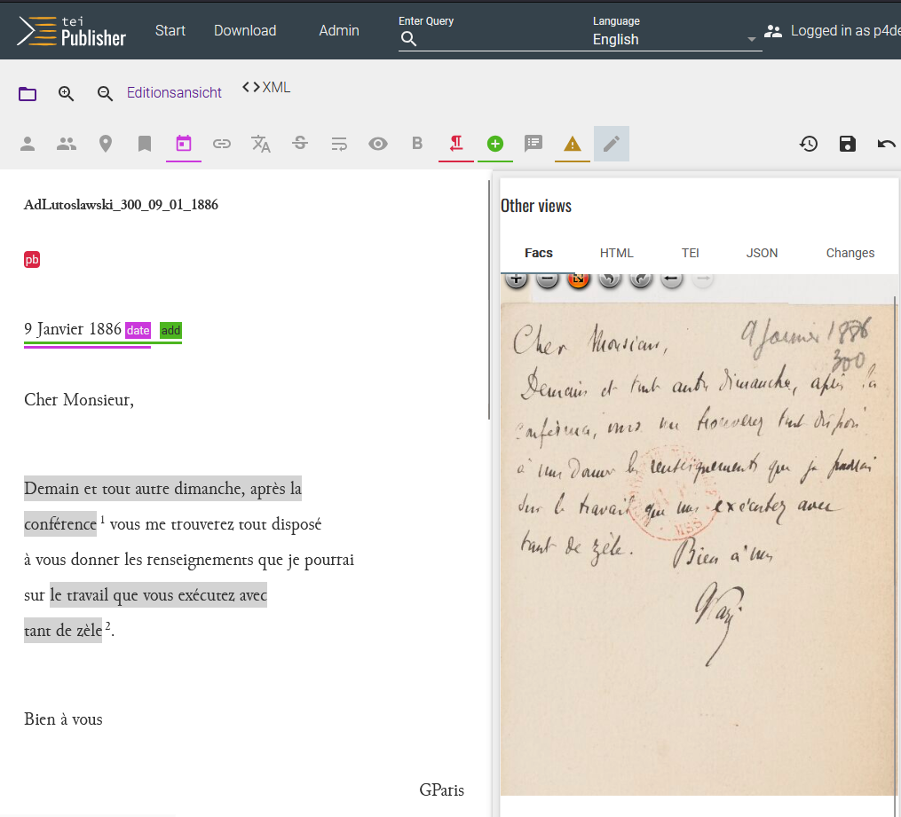

2.4 Inhaltliche Annotation
Was bedeutet digitales inhaltliches Annotieren?
Unter der inhaltlichen Annotation verstehen wir die Auszeichnung eines Wortes oder einer Wortfolge hinsichtlich ihrer semantischen Referenzen. Diese können sich auf denselben Text (intratextuell), andere Texte/Werke (intertextuell) oder beliebige Fakten (kontextuell) beziehen. Das vorliegende Kapitel wird sich primär mit der inter- und kontextuellen Referenzierung befassen, da diese editorisch bezüglich Forschungsaufwand und technisch bezüglich Tools und Schnittstellen am anspruchsvollsten sind. Trotzdem sollten Projekte intratextuelle Verweise nicht ausser Acht lassen, da sie insbesondere die Navigation innerhalb eines größeren Textes sehr erleichtern.
Verbreitete Beispiele:
-
Intratextuelle inhaltliche Annotationen:
- Verweis einer Briefpassage auf den darin angesprochenen Briefanhang;
- Verweis eines Inhaltsverzeichnisses auf die darin angegebenen Kapitel.
-
Intertextuelle inhaltliche Annotationen:
- Verweis eines in einem Brief implizit oder explizit thematisierten Werkes auf einen bibliographischen Eintrag im DSE-Register und/oder auf eine Bibliotheksdatenbank oder - idealerweise - eine Normdatenbank;
- Verweis einer Textstelle auf einen anderen Text in derselben DSE oder auf einen Text, der in einer anderen DSE ediert wurde.
-
Kontextuelle inhaltliche Annotation:
- Verweis einer Textstelle auf einen Eintrag im DSE-eigenen Ortsregister und/oder eine Normdatenbank für geographische Daten wie z.B. geonames.org.
- Verweis einer Textstelle auf einen Eintrag im DSE-eigenen Personenregister und/oder in einer Normdatenbank für Personen-Daten wie z.B.einen Personeneintrag in der Gemeinsame Normdatei (GND), die größte Normdatensammlung für Kultur- und Forschungsdaten im deutschsprachigen Raum.
Im Gegensatz zur textkritischen Annotation, die oft schon während der Transkription (siehe dort 3.5) gemacht wird, erscheint die inhaltlich annotierte Textstelle als Link, der diese Referenz durch einen Klick zugänglich macht (alternativ kann sie auch durch einen hover-/mouseover-Text kenntlich werden). Im Gegensatz zur Kommentierung ist eine inhaltliche Annotation ein einfacher Verweis, der selbsterklärend sein sollte oder zumindest erklärt wird durch die Weiterleitung zu einer editionsinternen Ressource (z.B. ein Eintrag in einem Register oder in einer Karte) oder einer externen Ressource (z.B. einer Normdatenbank wie GND).
Das inhaltliche Annotieren ist eine Editionsarbeit, die spezifisch durch digitale Werkzeuge, insbesondere der Möglichkeit der Verlinkung entsteht. Sie erzeugt das digitale Äquivalent eines Buch-Indexes (z.B. eines Sach-, Namens- oder Ortsregisters am Ende einer wissenschaftlichen Edition), hat aber weitreichendere Funktionen und weist eine größere Vollständigkeit auf. Die breite Vernetzung von Annotationen mit externen digitalen Ressourcen befördert das Konzept der Linked Open Data: dem Verständlichmachen, Verknüpfen, Teilen und Integrieren offen zugänglicher Datensets.
1. Standardlösungen für inhaltliches Annotieren
Die inhaltliche Annotation kann normalerweise mit dem gleichen Tool wie die Kommentierung gemacht werden, eine genaue Betrachtung des Digitalisats ist für beide Arbeitsschritte nicht mehr zwingend nötig. Transkriptionstools wie Transkribus bieten diese Arbeitsschritte (noch) nicht an, d.h. sie weisen bislang nicht die Möglichkeit auf, inhaltliche Annotationen als Links oder Kommentare zu erstellen. Solche Funktionen sind zwar Stand Sommer 2024 geplant. Sie sollten jedoch, falls implementiert, mit großer Vorsicht angewendet werden, weil jede zusätzliche Annotationsfunktion im Transkriptionstool neue Herausforderungen in der Konversion nach sich ziehen kann - zumindest solange Transkriptionstools noch nicht die Funktion besitzen, TEI/XML-Daten selbst zu publizieren.
Zwei technische Standardlösungen stehen zur Verfügung und werden im nächsten Unterkapitel in ihren Workflows dokumentiert:
-
Die Nutzung eines Tools, das sowohl Edition und Publikation erlaubt. Die hierfür im Detail getestete Lösung ist der TEI-Publisher.
-
Die Nutzung eines TEI/XML-Editors wie Oxygen: Er stellt in diesem Fall ein Verbindungsglied zwischen Transkriptionstool und Publikationstool dar.
2. Standard-Workflow-Schritte
2.1. Erstellen der Editionsrichtlinien
Weitgehend unabhängig vom verwendeten Tool sollte am Anfang des Arbeitsschrittes geklärt werden, welche Inhalte zu welchem Zweck ausgezeichnet werden müssen. Anleitend sollte die Frage sein, welche Nutzungsszenarien die DSE zu erfüllen hat:
- Soll sie möglichst viele inhaltliche Daten möglichst breit sammeln oder sind ganz spezifische Daten im Vordergrund?
- Welche Daten sind das jeweils?
Fünf Hauptkategorien inter- und kontextueller Referenzen, wie in den Beispielen eingangs schon aufgetaucht, haben sich in den letzten Jahren ausgebildet: Personendaten, Ortsdaten, Zeitdaten, Werkdaten und Schlagworte. Während Werkdaten und Schlagworte nicht in jeder DSE auftauchen, sind Personen, Orte und Zeiten mittlerweile Standard.
Etwas exotischer ist die Referenzierung weiterer Kategorien, denen technisch im Grunde keine Grenzen gesetzt sind, z.B. frei gewählte Themen (spezifischer als Schlagworte), historische Ereignisse oder linguistischer Eigenarten (z.B. die Nutzung von Fremdsprachen).
Herausforderung
Aus editorischer Sicht ist eine Entgrenzung der Kategorien immer mit dem Problem verknüpft, dass eine einmal eingeführte Kategorie sinnvollerweise konsequent angewendet werden muss, was zu viel Aufwand führen kann. Im Fall mehrerer Edierender bedingt es das genaue Befolgen komplexer Editionsrichtlinien bzw. die ständige Koordination zur ihrer Anpassung. Komplexe Sachverhalte, die nur in wenigen Texten nachvollziehbar gemacht werden müssen, sollten deshalb eher im Stellen- oder Text-Kommentar dargestellt werden.
In der Planung der inhaltlichen Annotation müssen folgende editorischen Überlegungen beachtet werden:
- Ist vor allem das DSE-eigenen Register zentral, etwa weil es kaum andere Datensätze dazu auf dem Internet gibt?
- Oder soll das Register in den meisten Fällen ein 'Zwischenhalt' darstellen, um eine Information zu bündeln und mit externen Ressourcen zu verknüpfen?
Beide Tool-Standardlösungen erlauben die Einbindung von Konnektoren, d.h. die halb-automatisierte Verlinkung der Annotation im TEI-XML mit einer Normdatenbank. Die Edierenden können aus den Vorschlägen des Konnektors den korrekten Normdatensatz auswählen und müssen die Verlinkung nicht selbst recherchieren und im TEI/XML verfassen. Sollte jedoch die Aussicht klein sein, überhaupt externe Normdaten zu finden, so ist die Anwendung von Konnektoren zweitrangig.
Im Detail sollte erwogen werden, wie oft welche Daten in einem Text ausgezeichnet werden sollen und welche Normdaten (s.u.) hierzu referenziert werden. Es ist beispielsweise nicht sinnvoll, Anreden (z.B. Du/Ihr) in Briefen jedes Mal zu annotieren, v.a. wenn die angesprochene Person mit dem:der Empfänger:in des Briefes identisch ist (diese Information liegt bereits in den Metadaten des Briefes vor). Solche Erwägungen, auch wenn sie trivial erscheinen mögen, sollten ebenfalls in Editionsrichtlinien aufgenommen und den DSE-Nutzenden zur Verfügung gestellt werden.
Showcase-Editionsrichtlinien: Inhaltliche Annotation
Das Projekt hat sich dazu entschieden, die drei Kategorien Ort, Person und Werk zu annotieren, da sich diese im Falle der historischen wissenschaftlichen Korrespondenzen von Gaston Paris am besten dazu eignen, das Forschungsnetzwerk des Gelehrten, das im Zentrum der eigenen Forschung der Projektleiterin steht, nachzuvollziehen.
-
Orte werden, wenn möglich, mit ihrem heutigen Ortsnamen auf geonames verlinkt.
- Orte werden nicht ausgezeichnet, wenn sie bereits in den Metadaten des Briefes vorhanden sind (Absende- oder Empfangsort).
-
Personen werden in einem ersten Schritt mit den Personendaten in GND verknüpft. Dies ist die einfachste From der Normdatenverknüpfen, da die Verlinkung mit GND im TEI Publisher vorkonfiguriert ist. In einem zweiten Schritt soll auch eine Verknüpfung über VIAF , ein internationaler Aggregator von Normdatensätzen, zu IdRef, der französischen Normdatenbank, hergestellt werden. IdRef ist angesichts des französischsprachigen Corpus und des romanistischen Forschungsinteresse von zentraler Bedeutung, kann Stand 2024 jedoch noch nicht automatisiert mit dem TEI Publisher verknüpft werden. Personendaten, die in der GND noch nicht verzeichnet sind, werden über einen Service der GND-Redaktion an der Zentralbibliothek Zürich selbstständig in der GND ergänzt und so verknüpfbar. Dadurch trägt das Projekt zur Verbesserung der GND-Datensätze hinsichtlich französischer/romanistischer Daten bei.
- Personen werden nicht im Text ausgezeichnet, wenn sie bereits Teil der Metadaten sind (Verfasser:in oder Empfänger:in)
-
Werke werden aus der umfangreichen Bibliographie der Projektleiterin aus dem Bibliographie-Tool Zotero importiert. Das dadurch entstehende Register könnte in einem zweiten Schritt mit Werkdaten aus der GND verknüpft werden, dies ist jedoch in der Showcase-Edition nicht umgesetzt.
Referenzierung von Normdaten
Normiertes Vokabular im Allgemeinen und die GND im Besonderen stärken die Interoperabilität aus den FAIR-Prinzipien. Die GND mit ihren 10 Millionen normierten Datensätze zu Personen, Geografika, Körperschaften, Konferenzen, Werktitel sowie Sachbegriffen steht für die Nachnutzung zur freien Verfügung. Sie diente lange hauptsächlich der Erschliessung von Material in Bibliotheken, wird aber inzwischen in wachsendem Maße auch für die Erschliessung von Sammlungen in Archiven und Museen sowie in verschiedenen digitalen Projekt- und Forschungskontexten wie DSEs verwendet. Die so erschlossenen Ressourcen werden dadurch anschlussfähig an moderne Suchumgebungen, gleichzeitig erhöht sich durch die Verwendung des kontrollierten Vokabulars die Auffind- und Sichtbarkeit der Ressourcen.
Hilfreich im Verlauf des Annotierens ist die Zusammenarbeit mit einer bibliothekarischen Fachstelle, um die Lücke zu schliessen, mit der Editionsprojekte oft konfrontiert sind («so haben einige Personen, die in der Korrespondenz auftreten, noch keinen GND– oder VIAF-Eintrag», Sarah Rebecca Ondraszek: Data, Data, there to Crawl, Who’s the Fairest of Them All?). Die GND-Redaktion der UB und ZB Zürich unterstützt digitale Editionsprojekte bei der aktiven Nutzung sowie der selbständigen Erfassung von Datensätzen im Webformular der GND. Die GND-Redaktion ermöglicht den Zugang und schult in der Arbeit mit dem Webformular, in der Folge sind die selbst erfassten Daten sofort in der GND verfügbar und können in der Annotation verlinkt werden. Die Redaktion bietet begleitend eine GND-Einführung an und berät zur Nachnutzung der Daten. In Absprache gleicht sie ausserdem ab, welche Personen, Orte etc. aus vorhandenen Listen oder Registern schon in der GND vorhanden sind.
Für den anglophonen Bereich spielen in der Sacherschliessung die Library of Congress Subject Headings (LCSH) und für den frankophonen Bereich Répertoire d’autorité-matière encyclopédique et alphabétique unifié (RAMEAU) vor allem über die Identifiants et référentiels (IdRef) eine zentrale Rolle. Auch die GND selbst verknüpft übereinstimmende Entitäten der genannten Normdateien. Ferner führt die Sammlung VIAF (Virtual International Authority File) mehrere Normdateien und Wikidata in einem von OCLC gehosteten Normdatendienst automatisiert zusammen. Während die Index-Verlinkung zur GND direkt im TEI-Publisher integriert ist, kann IdRef zur Annotation nur indirekt über Aggregatoren oder Konkordanzen erreicht werden.
2.2. Die inhaltliche Annotation im TEI-Publisher
Die open source software TEI Publisher bietet seit Version 7 (Stand Sommer 2024: Version 9) die Möglichkeit, mithilfe einer graphischen Oberfläche TEI/XML-Daten mit Annotationen anzureichern. Das bedeutet, dass der zu bearbeitende Text nicht als TEI/XML erscheint und als Code bearbeitet werden muss, sondern ähnlich dem Textverarbeitungsprogramm Word darstellbar ist. Die Codierung in TEI/XML lässt sich jedoch jederzeit überprüfen und auch direkt manipulieren, was zuweilen notwendig ist, aber zusätzliches Fachwissen benötigt.
Wahl der ODDs
Nach dem Importieren der TEI/XML-Daten in den TEI Publisher können diese mithilfe unterschiedlicher ODDs (One Document Does it all) auf der Benutzeroberfläche des Tools dargestellt werden. ODD-Dateien (eine genaue Beschreibung findet sich im Konde-Weissbuch) sind in der ODD-Schema-Sprache verfasst; sie geben den TEI/XML-Code aufgrund unterschiedlicher, festgelegter Schemata aus: Im Falle der (hier textkritischen) Annotation <hi rend="underline">rassuré</hi> 'erkennt' das ODD beispielsweise, dass das Wort "rassuré" unterstrichen werden soll.
Das TEI-Konsortium bietet verschiedene ODDs an und dokumentiert deren Verwendung; da TEI-XML ein flexibler Standard ist, muss und kann nicht jede Annotation für dasselbe verwendet werden. Im deutschsprachigen Raum hat sich neben den Standard-ODDS des Konsortiums das ODD des deutschen Textarchivs für Editionen durchgesetzt. ODDs können für jedes Projekt angepasst werden, etwa mithilfe des Online-Tools ROMA.
Technisch gesehen gibt es zwei verschiedene Anwendungsfälle für das ODD, die Darstellung und die Validierung der Daten.Eigentlich (also nach Spezifikation) sind beide als Teil desselben Dokuments vorgesehen, faktisch wird im TEI-Publisher-Umfeld die Darstellung oft separat definiert.
Annotations-Editor
Der TEI Publisher hat verschiedene Standard-ODDS vorinstalliert; auch der Überarbeitungsmodus zur Annotation hat die Form eines ODDS. Dieses ODD hat den Datei-Namen 'annotations.odd' und kann einfach aus einem Seitenreiter ausgewählt haben. Der dadurch aktivierte Annotations-Editor kann angepasst werden, siehe hierzu die Dokumentation des TEI-Publishers; wichtige Hinweise haben wir zudemim Unterkapitel Annotationen mit TEI-Publisher zusammengefasst.
Erfahrungen aus der Showcase-Edition
Um alle benötigten Annotationen im Editions-Editor zu aktivieren, waren mehrere Versuche, Besprechungen und Überarbeitungsrunden notwendig. Das Projekt hat u.a. die Notwendigkeit erkannt, die Digitalisate, die in der Standard-Einstellung des Annotations-Editors relativ klein am unteren Bildrand platziert ist, rechts des annotierten Textes grösser einzublenden. Somit können auch textkritische Annotationen oder Korrekturen an der Transkription, für die der Vergleich mit dem Faksimile nötig ist, nachgetragen werden.
Das angepasste Annotations-ODD des Projektes ist über GitLab öffentlich verfügbar:
=> HIER PROJEKTRESSOURCEN EINFÜGEN. 
Der TEI-Publisher legt alle Daten der inhaltlichen Annotation in einem XML-Register an, dort sind sowohl Normdaten-Ids als auch eigene erzeugte hinterlegt. Die Verwendung einer zusätzlichen Datenbank ist deshalb unnötig.
2.3. Die inhaltliche Annotation in Oxygen mit und ohne ediarum
Nach dem Import der TEI-XML-Daten in den Editor wird mithilfe der Arbeitsumgebung ediarum die Auszeichnung durchgeführt. Ediarum stellt TEI-XML-Daten ähnlich wie eine Word-Datei dar und hat entsprechende Formatierungs-Buttons. Eine ausführliche ediarum-Dokumentation existiert für das Aufsetzen, Konfigurieren und Verwenden der Editionsumgebung und wird vom ediarum-Team regelmässig ergänzt.
=> Dieser Punkt wird durch Erfahrungen aus dem Schwarzenbach-Projekt angereichert, wobei die Benutzung von ediarum sich voraussichtlich auf sehr wenige Funktionen beschränkt.
4. Limitationen
Die aufgeführten Standard-Wege zur inhaltlichen Annotation haben grundsätzlich dieselbe editorische Limitation: Je mehr Annotations-Kategorien in der Edition eingeführt werden, desto schwieriger wird die konsequente Einhaltung der Editionsrichtlinien.
Auf technischer Seite lassen sich grundsätzlich zwei Limitationen unterscheiden:
-
Wird eine benutzerfreundliche Annotations-Oberfläche wie der Annotations-Editor des TEI Publisher oder die ediarum-Erweiterung zu Oxygen verwendet, geht die einfachere Bedienung mit einer Eingrenzung der Annotationsmöglichkeiten einher. Sollen diese erweitert werden, benötigt es reglmässigen Support durch eine technische Fachkraft und womöglich aufwändigere Versuchsphasen.
-
Wird ein XML-Editor wie Oxygen verwendet, so ist die Einführung in die Codier-Arbeit zwecks Annotationserstellung mit Aufwand verbunden; die Editionsumgebung ist nicht 'ready to use', das Annotieren muss eingeübt werden. Eine Erweiterung und Anpassung der Editionsrichtlinien ist hingegen mit weniger technischem Support verbunden.
Welche der beiden Wege insgesamt weniger Aufwand auf technischer und editorischer Seite benötigt, hängt von der Dynamik bezüglich der Komplexität eines Projektes ab: Sind die Editionsrichtlinien zur inhaltlichen Annotation einfach und von Anfang an gesetzt, so ist der erste Weg vorzuziehen; ist das Projekt komplex (z.B. durch ein anwachsendes, anfänglich noch schwer abschätzbares Corpus) und die Anforderungen an die Annotationen anfänglich schwer festzulegen, ist die Arbeit im TEI/XML-Code selbst wahrscheinlich sinnvoller. Die längere technische Einarbeitungszeit der Editionsmitarbeitenden zahlt sich dann durch größere Flexibilität aus.